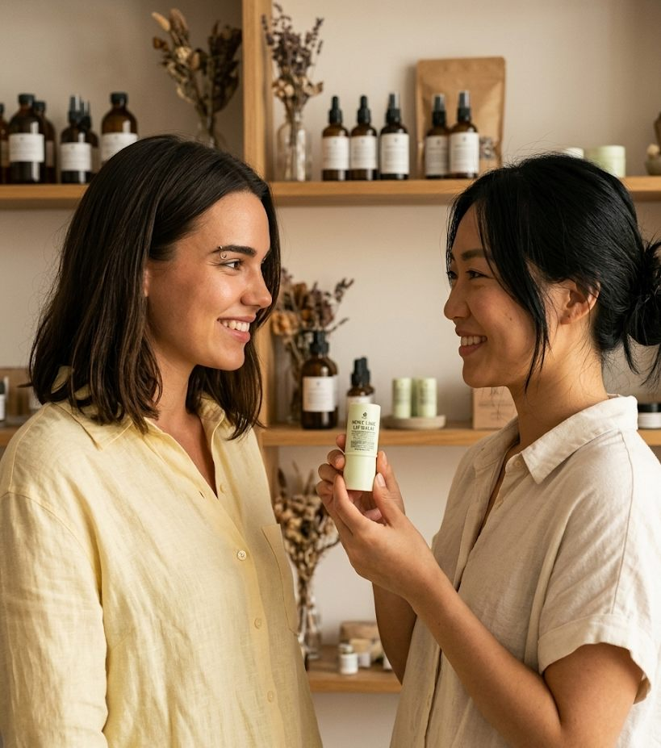

One tested formula, explained ingredient by ingredient. Twenty minutes of your time, twenty tubes of lip balm — and the understanding of how to customize it for yourself.
Get the Guide — Free →
Inside the guide
The simple science of waxes, butters, and oils — made accessible.
What each one does, why it's in the formula, and what it brings to your lips.
Exact percentages and batch weight — scalable from 1 tube to 1000+.
Less than you think. A scale, a thermometer, and a few kitchen basics.
From weighing to pouring, with the small details that make the difference.
The one technical section that separates a smooth balm from a grainy one.
How to fill tubes cleanly, how long your batch keeps, and how to store it well.
Safe customization options — change one variable at a time, and learn what each one does.
Why this guide

15 pages, one tested formula, and everything you need for your first batch. Instant PDF, straight to your inbox.
It's on its way — check your inbox. ✦
Free PDF · No spam, ever · Unsubscribe anytime